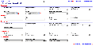

Blacksmith Applications, www.blacksmithapps.com
The search programs page allows you to search very specifically for programs that meet particular criteria, from any combination of fields within Program, Product, Customer, Geography and Owner.
Use the [Show Program Search Result] link to toggle between displaying the full search program form and the last results listing from the [search programs] link at the lower left of the page.
If you click the [search programs] link with no search criteria entered on the search program form, the full listing of programs is displayed.
Use the [reset form] link to clear any search criteria from your previous search.
Use the links in the upper right to return to the program [scorecard], [create new] program or [print the results], a listing of your search results.
Click the thumbnail to see a sample image of the search programs form:
